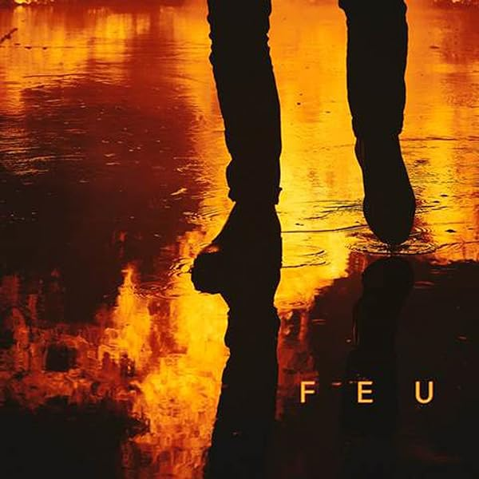

Liste des pistes
- Martin Eden
- Mon âme (Ft.Sneazzy)
- Le Horla
- Nique les clones part. ll
- Rêve d'avoir des rêves
- Tempête
- Égérie
- Reuf (Ft. Ed Sheeran)
- La moue des morts (Ft. S-Crew)
- Laisser aller
- On verra
- Ma dope (Ft.S.Pri Noir)
- Jeux d'ombre (Ft.Amber-Simone (UK) & Doums)
- Elle en avait envie
- Princesse (Ft.Nemir)
- Risibles amours
- Point d'interrogation (Ft.Alpha Wann)
- Être humain
- 7:77AM (Ft 86 Joon)
- Plume
- La ballade du Frémont
- Question d'honneur (Ft. S-Crew)
- Deux-trois (Ft.1995)
- Le bruit de ma ville (Ft. Phénomène Bizness)
- Pars avec moi (Ft.1995)
- Mal aimé
- Le Horla (Instrumental)
- Martin Eden (Instrumental)
- Nique les clones part ll (Instrumental)
- Égérie (Instrumental)
- Reuf (Instrumental)
- On verra (Instrumental)
- Ma dope (Instrumental)
- 7:77AM (Instrumental)
"Feu" est composé de morceaux dynamiques, tels que "On verra", qui est devenu un hit en France, mais aussi de titres plus mélancoliques et réfléchis comme "Égérie" et "Ma dope". L'album est salué pour son lyrisme intelligent, la complexité de ses rimes et la diversité de ses influences musicales. Au niveau de la réception, "Feu" a été un succès critique et commercial, récompensé par une certification de disque de diamant en France. Il a établi Nekfeu comme un rappeur à la fois poète et rebelle, capable de toucher un public large, et a prouvé que le rap conscient pouvait coexister avec le succès grand public.